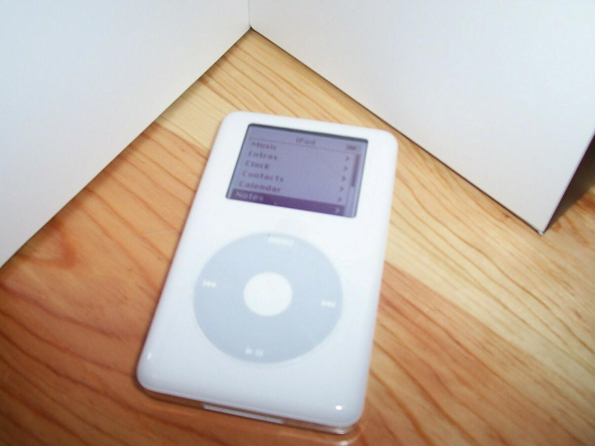
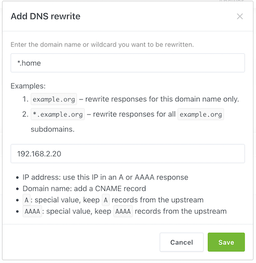
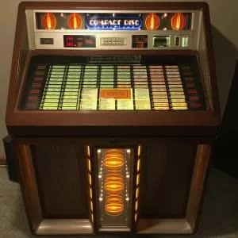

1997 Photo at computer
The earliest photo I have of me at a computer. Circa 1997!
The earliest photo I have of me at a computer. Circa 1997!
Last month Apple announced the end of the iPod. I thought it might be fun to document my history with the product.
--
I got my first iPod in March 2005. I believe I bought mine at Best Buy on a weekend trip 350 miles away from home.

I was listening to a lot of podcasts in those early days and had to use "podcatcher" software because iTunes didn't support podcasts yet. That changed later that year when iTunes 4.9 added podcasts and the rest is history.
I visited that same Best Buy a couple years later when the iPod Touch was released. I remember checking their website and they said they had them in stock, but when I got to the store I couldn't find them. I finally asked and they were still in the back, they went and got one for me.
The iPod Touch was so much fun back then. The iPhone wasn't "in" Montana back then (no joke) and so the Touch was as close as I could get. I remember jailbreaking the thing, and even hanging out in IRC chatrooms trying to troubleshoot my jailbreak attempts. :-D
This past winter I spent ~$100 on new parts to revive my old 4th gen iPod. It now has new life with a fresh battery and an SD card in place of the 20GB spinning hard drive. It's hard to believe a piece of consumer technology from 17 years ago is still alive and well.
I love iPod. It was one of my first adventures into a lifetime of technology.
I started using Nginx Proxy Manger at home recently and found a fast and easy way to add internal domains to it. Here is a simple walkthrough.
In the AdGuard Home web interface, go to Filters->DNS rewrites.

Click Add DNS rewrite and enter something like *.home in the domain name field.
Enter the IP address of your NPM host and click Save.
There really isn't anything special to do in NPM. Just add a Proxy Host and in the domain names field you can enter anything as long as it ends in .home (or whatever you chose for a wildcard). www.home even works!
Another little feature I discovered while setting this up is that I can add multiple domain names for each proxy host. So adguard.home and dns.home can both get me to the same place. This helps when I can't remember the name of a service, or when you change software you can keep using something like dashboard.home for your dashboard of choice.
Killing Kennedy: The End of Camelot
8 hours 25 minutes. Started January 11. Finished January 16th.
Killing Lincoln
7 hours 49 minutes. Started June 7th. Finished June 15th.
True Crimes and Misdemeanors: The Investigation of Donald Trump
496 pages. Started August 18th. Finished October 1st.
Where Law Ends: Inside the Mueller Investigation
432 pages. Started October 1st. Finished October 27th.
Battle for the Big Sky
286 pages. Started October 28th. Finished November 25th.
The Conscience of a Conservative
144 pages. Started November 26th. Finished November 28th.
The War on Normal People
304 pages. Started November 28th. Finished December 2nd.
Animal Farm
140 pages. Started December 29th. Finished January 9th.
Doing Justice
368 pages. Started April 15th. Finished April 27th.
Pound Foolish
9 hours 7 minutes. Started May 2nd. Finished May 14th.
Everything Is Obvious: *Once You Know the Answer
368 pages. Started May 15th. Finished May 31st.
An Absolutely Remarkable Thing
352 pages. Started June 1st. Finished June 12th.
The President is Missing
527 pages. Started June 16th. Finished June 24th.
Paper Towns
305 pages. Started June 25th. Finished July 9th.
Permanent Record
352 pages. Started December 1st. Finished December 4th.
The Feather Thief: Beauty, Obsession, and the Natural History Heist of the Century
336 pages. Started November 27th. Finished December 13th.
1984
326 pages. Started December 16th. Finished January 9th.
Evicted. Poverty and Profit in the American City
448 pages. Started April 11th. Finished June 3rd.
A Higher Loyalty: Truth, Lies, and Leadership
312 pages. Started June 3rd. Finished June 11th.
Turtles All The Way Down
304 pages. Started June 12th. Finished June 16th.
The Hellfire Club
9 hours 58 minutes. Started July 6th. Finished July 11th.
Of Mice and Men
112 pages. Started September 3rd. Finished September 7th.
Fear: Trump in the White House
12 hours 20 minutes. Started September 11th. Finished September 17th.
The Old Man and the Sea
128 pages. Started September 22nd. Finished September 25th.
The Tipping Point
8 hours 33 minutes. Started October 15th. Finished December 11th.
This is my first year trying this. I'm going to keep a running list of the books I read this year.
And Then There Were None 257 pages. Started January 1st. Finished January 7th.
How to Win Friends and Influence People 226 pages. Started January 21st. Finished February 20th.
To Kill a Mockingbird 385 pages. Started February 22nd. Finished March 16th.
This Life I Live 6 hours 4 minutes. Started March 12th. Finished March 18th.

I recently picked up an AMI R-89 jukebox. It is a combo unit, plays both 45 rpm records and CDs. It looked to be in full working order, was full of music, and only $400. I have always wanted a jukebox, but I also wanted to be able to easily play any music through it. I’ve found a way, and it feels like the future!